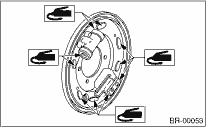

1. Clean the back plate and wheel cylinder assembly.
2. Apply grease to the portions indicated by arrows in Figure.
Brake grease:
Dow Corning Molykote M 7439 (Part No. 003602001)

3. Apply grease to the adjusting screw and both ends of adjuster.
Brake grease:
Dow Corning Molykote M 7439 (Part No. 003602001)

4. Attach the upper shoe return spring to the brake shoe.
5. Connect the parking brake cable to the parking lever.
6. While positioning the brake shoe (one at a time) in the groove of the wheel cylinder, secure the brake shoe in place.
|
(1) |
Wheel cylinder ASSY |
|
(2) |
Brake shoe (Trailing) |
7. Fix the shoes in place by connecting the hold-down cup to the hold-down pin.
8. Install the lower shoe return spring.
9. Set the outer diameter of brake shoes 0.5 to 0.8 mm (0.020 to 0.031 in) smaller in comparison with the inner diameter of the brake drum.